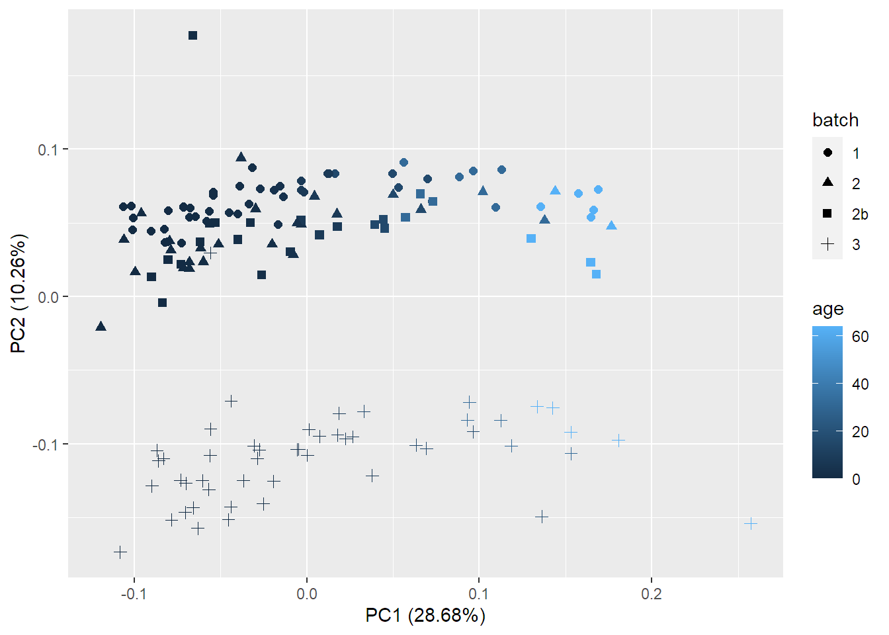
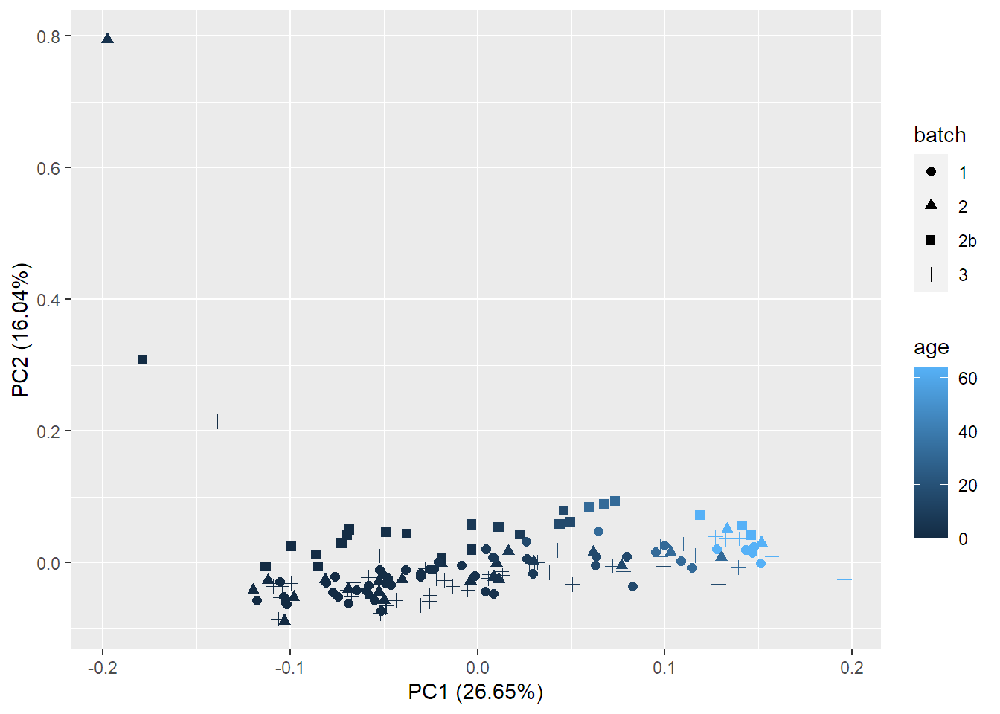
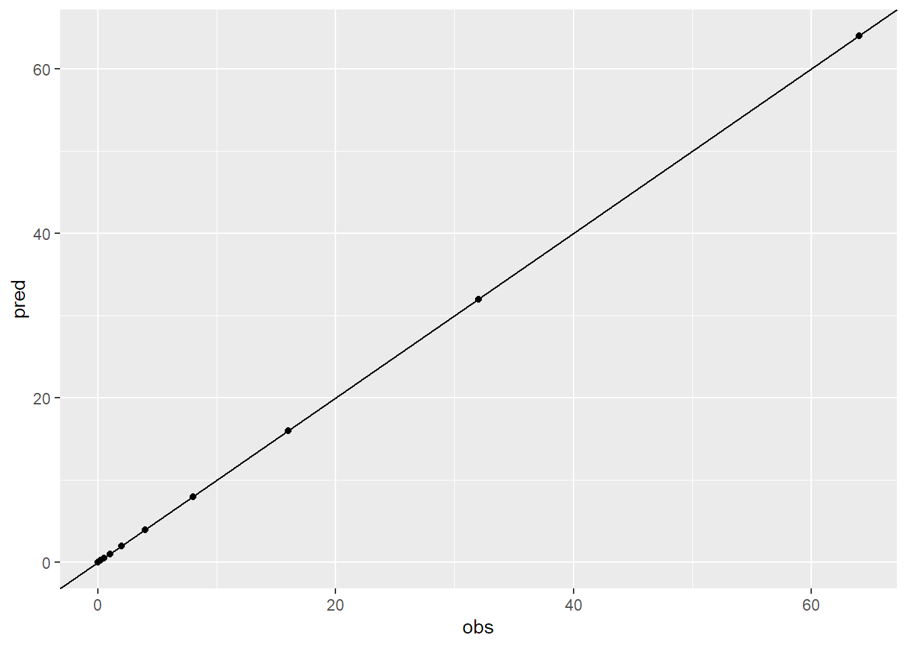
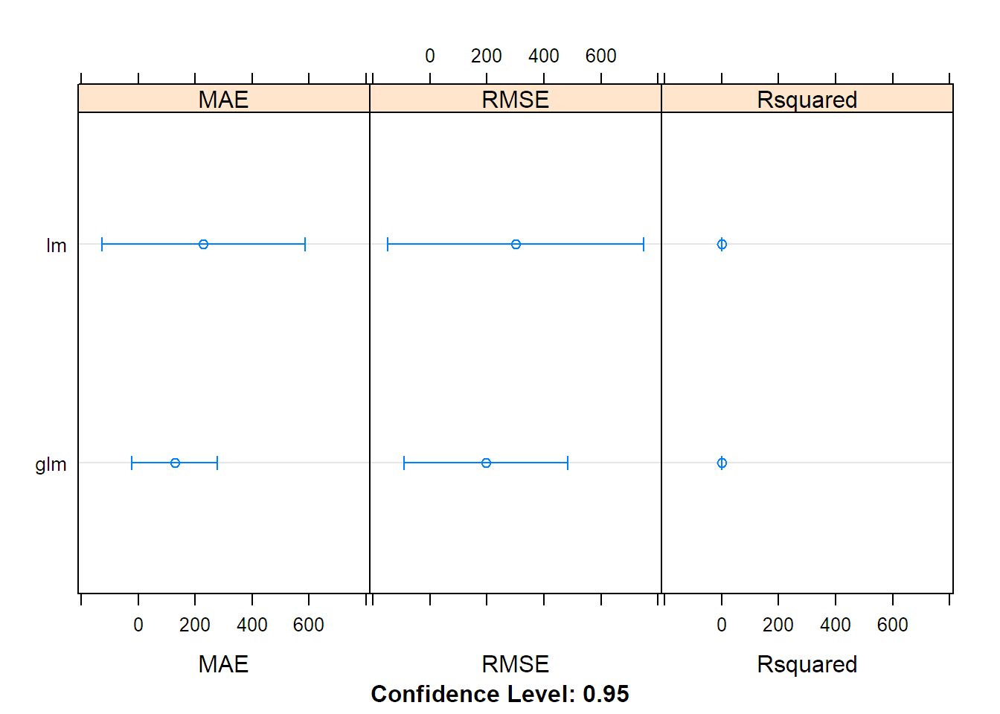

Last updated: 2022-03-14
Checks: 7 0
Knit directory: workflowr/data/
This reproducible R Markdown analysis was created with workflowr (version 1.6.2). The Checks tab describes the reproducibility checks that were applied when the results were created. The Past versions tab lists the development history.
Great! Since the R Markdown file has been committed to the Git repository, you know the exact version of the code that produced these results.
Great job! The global environment was empty. Objects defined in the global environment can affect the analysis in your R Markdown file in unknown ways. For reproduciblity it’s best to always run the code in an empty environment.
The command set.seed(20220214) was run prior to running the code in the R Markdown file. Setting a seed ensures that any results that rely on randomness, e.g. subsampling or permutations, are reproducible.
Great job! Recording the operating system, R version, and package versions is critical for reproducibility.
Nice! There were no cached chunks for this analysis, so you can be confident that you successfully produced the results during this run.
Great job! Using relative paths to the files within your workflowr project makes it easier to run your code on other machines.
Great! You are using Git for version control. Tracking code development and connecting the code version to the results is critical for reproducibility.
The results in this page were generated with repository version 2947ad7. See the Past versions tab to see a history of the changes made to the R Markdown and HTML files.
Note that you need to be careful to ensure that all relevant files for the analysis have been committed to Git prior to generating the results (you can use wflow_publish or wflow_git_commit). workflowr only checks the R Markdown file, but you know if there are other scripts or data files that it depends on. Below is the status of the Git repository when the results were generated:
Ignored files:
Ignored: .Rhistory
Ignored: .Rproj.user/
Ignored: analysis/preprocessing_thesis_cache/
Untracked files:
Untracked: data/TraceAge_bloodspots_t3_neg_clean.csv
Untracked: data/TraceAge_bloodspots_t3_pos_clean.csv
Untracked: data/data_for_BN.RData
Note that any generated files, e.g. HTML, png, CSS, etc., are not included in this status report because it is ok for generated content to have uncommitted changes.
These are the previous versions of the repository in which changes were made to the R Markdown (analysis/regression_thesis.Rmd) and HTML (docs/regression_thesis.html) files. If you’ve configured a remote Git repository (see ?wflow_git_remote), click on the hyperlinks in the table below to view the files as they were in that past version.
| File | Version | Author | Date | Message |
|---|---|---|---|---|
| html | 1d9c725 | marcsole96 | 2022-03-01 | Build site. |
| html | e73936f | marcsole96 | 2022-02-25 | Build site. |
| Rmd | e5bedbe | marcsole96 | 2022-02-25 | models |
| html | 6643e18 | marcsole96 | 2022-02-21 | Build site. |
| Rmd | f010805 | marcsole96 | 2022-02-21 | changed stuff |
| html | 4d5bb0d | marcsole96 | 2022-02-15 | Build site. |
| Rmd | 21e9125 | marcsole96 | 2022-02-15 | more stuff done |
| html | 49fd168 | marcsole96 | 2022-02-14 | Build site. |
| Rmd | 1f0c943 | marcsole96 | 2022-02-14 | stuff |
| html | 88464cc | marcsole96 | 2022-02-14 | Build site. |
| Rmd | b935ac7 | marcsole96 | 2022-02-14 | things done |
#setwd("../workflowr/data")
mdf <- read_csv("TraceAge_bloodspots_t3_pos_clean.csv")
-- Column specification --------------------------------------------------------
cols(
.default = col_double(),
sample = col_character(),
batch = col_character(),
type = col_character(),
sample_id = col_character()
)
i Use `spec()` for the full column specifications.mdf<-mdf %>% gather(key="mz",value="values",6:ncol(mdf)) %>% spread(mz,values)pca_df<-mdf %>% filter(type=="sample")pr.out <- prcomp(pca_df[,6:(ncol(mdf))], scale. = TRUE)
autoplot(pr.out, data = pca_df, colour = 'age', shape="batch", size=2)Warning: `select_()` was deprecated in dplyr 0.7.0.
Please use `select()` instead.
This warning is displayed once every 8 hours.
Call `lifecycle::last_warnings()` to see where this warning was generated.
dat_3d <- pr.out$x[,1:3] %>% as_tibble() %>% mutate(group = pca_df$batch, pen=pca_df$age)
fig <- plot_ly(dat_3d, x = ~PC1, y = ~PC2, z = ~PC3,
color = ~group,colors = c("black", "darkorange", "dodgerblue","darkred"), size = I(100))
fig <- fig %>% add_markers()
fig <- fig %>% layout(scene = list(xaxis = list(title = 'PC1'),
yaxis = list(title = 'PC2'),
zaxis = list(title = 'PC3')))
figdat_3d <- pr.out$x[,4:6] %>% as_tibble() %>% mutate(group = pca_df$batch, pen=pca_df$age)
fig <- plot_ly(dat_3d, x = ~PC4, y = ~PC5, z = ~PC6,
color = ~group,colors = c("black", "darkorange", "dodgerblue","darkred"), size = I(100))
fig <- fig %>% add_markers()
fig <- fig %>% layout(scene = list(xaxis = list(title = 'PC4'),
yaxis = list(title = 'PC5'),
zaxis = list(title = 'PC6')))
figtest_df<-mdf %>% gather(key="mz",value="values",6:ncol(mdf))test_df$values[is.na(test_df$values)] <- 0test_df$values <- test_df$values^0.25mdf <- test_df %>% spread(mz,values)pca_df<-mdf %>% filter(type=="sample")pr.out <- prcomp(pca_df[,6:(ncol(mdf))], scale. = TRUE)
autoplot(pr.out, data = pca_df, colour = 'age', shape="batch", size=2)
dat_3d <- pr.out$x[,1:3] %>% as_tibble() %>% mutate(group = pca_df$batch, pen=pca_df$age)
fig <- plot_ly(dat_3d, x = ~PC1, y = ~PC2, z = ~PC3,
color = ~group,colors = c("black", "darkorange", "dodgerblue","darkred"), size = I(100))
fig <- fig %>% add_markers()
fig <- fig %>% layout(scene = list(xaxis = list(title = 'PC1'),
yaxis = list(title = 'PC2'),
zaxis = list(title = 'PC3')))
figdat_3d <- pr.out$x[,4:6] %>% as_tibble() %>% mutate(group = pca_df$batch, pen=pca_df$age)
fig <- plot_ly(dat_3d, x = ~PC4, y = ~PC5, z = ~PC6,
color = ~group,colors = c("black", "darkorange", "dodgerblue","darkred"), size = I(100))
fig <- fig %>% add_markers()
fig <- fig %>% layout(scene = list(xaxis = list(title = 'PC4'),
yaxis = list(title = 'PC5'),
zaxis = list(title = 'PC6')))
figtraining_DF <- mdf %>% select(-sample,-batch,-type,-sample_id)
training_DF[is.na(training_DF)] <- 0
training_x <- training_DF %>% select(-age) %>% as.data.frame()
training_y <- training_DF$agetrControl <- trainControl(method = "repeatedcv", number = 5, verboseIter = T, savePredictions = "final")
fit1 <- train(x = training_x,
y = training_y,
method = "glmnet",
tuneLength = 15,
trControl = trControl
)+ Fold1.Rep1: alpha=0.1000, lambda=25.37
- Fold1.Rep1: alpha=0.1000, lambda=25.37
+ Fold1.Rep1: alpha=0.1643, lambda=25.37
- Fold1.Rep1: alpha=0.1643, lambda=25.37
+ Fold1.Rep1: alpha=0.2286, lambda=25.37
- Fold1.Rep1: alpha=0.2286, lambda=25.37
+ Fold1.Rep1: alpha=0.2929, lambda=25.37
- Fold1.Rep1: alpha=0.2929, lambda=25.37
+ Fold1.Rep1: alpha=0.3571, lambda=25.37
- Fold1.Rep1: alpha=0.3571, lambda=25.37
+ Fold1.Rep1: alpha=0.4214, lambda=25.37
- Fold1.Rep1: alpha=0.4214, lambda=25.37
+ Fold1.Rep1: alpha=0.4857, lambda=25.37
- Fold1.Rep1: alpha=0.4857, lambda=25.37
+ Fold1.Rep1: alpha=0.5500, lambda=25.37
- Fold1.Rep1: alpha=0.5500, lambda=25.37
+ Fold1.Rep1: alpha=0.6143, lambda=25.37
- Fold1.Rep1: alpha=0.6143, lambda=25.37
+ Fold1.Rep1: alpha=0.6786, lambda=25.37
- Fold1.Rep1: alpha=0.6786, lambda=25.37
+ Fold1.Rep1: alpha=0.7429, lambda=25.37
- Fold1.Rep1: alpha=0.7429, lambda=25.37
+ Fold1.Rep1: alpha=0.8071, lambda=25.37
- Fold1.Rep1: alpha=0.8071, lambda=25.37
+ Fold1.Rep1: alpha=0.8714, lambda=25.37
- Fold1.Rep1: alpha=0.8714, lambda=25.37
+ Fold1.Rep1: alpha=0.9357, lambda=25.37
- Fold1.Rep1: alpha=0.9357, lambda=25.37
+ Fold1.Rep1: alpha=1.0000, lambda=25.37
- Fold1.Rep1: alpha=1.0000, lambda=25.37
+ Fold2.Rep1: alpha=0.1000, lambda=25.37
- Fold2.Rep1: alpha=0.1000, lambda=25.37
+ Fold2.Rep1: alpha=0.1643, lambda=25.37
- Fold2.Rep1: alpha=0.1643, lambda=25.37
+ Fold2.Rep1: alpha=0.2286, lambda=25.37
- Fold2.Rep1: alpha=0.2286, lambda=25.37
+ Fold2.Rep1: alpha=0.2929, lambda=25.37
- Fold2.Rep1: alpha=0.2929, lambda=25.37
+ Fold2.Rep1: alpha=0.3571, lambda=25.37
- Fold2.Rep1: alpha=0.3571, lambda=25.37
+ Fold2.Rep1: alpha=0.4214, lambda=25.37
- Fold2.Rep1: alpha=0.4214, lambda=25.37
+ Fold2.Rep1: alpha=0.4857, lambda=25.37
- Fold2.Rep1: alpha=0.4857, lambda=25.37
+ Fold2.Rep1: alpha=0.5500, lambda=25.37
- Fold2.Rep1: alpha=0.5500, lambda=25.37
+ Fold2.Rep1: alpha=0.6143, lambda=25.37
- Fold2.Rep1: alpha=0.6143, lambda=25.37
+ Fold2.Rep1: alpha=0.6786, lambda=25.37
- Fold2.Rep1: alpha=0.6786, lambda=25.37
+ Fold2.Rep1: alpha=0.7429, lambda=25.37
- Fold2.Rep1: alpha=0.7429, lambda=25.37
+ Fold2.Rep1: alpha=0.8071, lambda=25.37
- Fold2.Rep1: alpha=0.8071, lambda=25.37
+ Fold2.Rep1: alpha=0.8714, lambda=25.37
- Fold2.Rep1: alpha=0.8714, lambda=25.37
+ Fold2.Rep1: alpha=0.9357, lambda=25.37
- Fold2.Rep1: alpha=0.9357, lambda=25.37
+ Fold2.Rep1: alpha=1.0000, lambda=25.37
- Fold2.Rep1: alpha=1.0000, lambda=25.37
+ Fold3.Rep1: alpha=0.1000, lambda=25.37
- Fold3.Rep1: alpha=0.1000, lambda=25.37
+ Fold3.Rep1: alpha=0.1643, lambda=25.37
- Fold3.Rep1: alpha=0.1643, lambda=25.37
+ Fold3.Rep1: alpha=0.2286, lambda=25.37
- Fold3.Rep1: alpha=0.2286, lambda=25.37
+ Fold3.Rep1: alpha=0.2929, lambda=25.37
- Fold3.Rep1: alpha=0.2929, lambda=25.37
+ Fold3.Rep1: alpha=0.3571, lambda=25.37
- Fold3.Rep1: alpha=0.3571, lambda=25.37
+ Fold3.Rep1: alpha=0.4214, lambda=25.37
- Fold3.Rep1: alpha=0.4214, lambda=25.37
+ Fold3.Rep1: alpha=0.4857, lambda=25.37
- Fold3.Rep1: alpha=0.4857, lambda=25.37
+ Fold3.Rep1: alpha=0.5500, lambda=25.37
- Fold3.Rep1: alpha=0.5500, lambda=25.37
+ Fold3.Rep1: alpha=0.6143, lambda=25.37
- Fold3.Rep1: alpha=0.6143, lambda=25.37
+ Fold3.Rep1: alpha=0.6786, lambda=25.37
- Fold3.Rep1: alpha=0.6786, lambda=25.37
+ Fold3.Rep1: alpha=0.7429, lambda=25.37
- Fold3.Rep1: alpha=0.7429, lambda=25.37
+ Fold3.Rep1: alpha=0.8071, lambda=25.37
- Fold3.Rep1: alpha=0.8071, lambda=25.37
+ Fold3.Rep1: alpha=0.8714, lambda=25.37
- Fold3.Rep1: alpha=0.8714, lambda=25.37
+ Fold3.Rep1: alpha=0.9357, lambda=25.37
- Fold3.Rep1: alpha=0.9357, lambda=25.37
+ Fold3.Rep1: alpha=1.0000, lambda=25.37
- Fold3.Rep1: alpha=1.0000, lambda=25.37
+ Fold4.Rep1: alpha=0.1000, lambda=25.37
- Fold4.Rep1: alpha=0.1000, lambda=25.37
+ Fold4.Rep1: alpha=0.1643, lambda=25.37
- Fold4.Rep1: alpha=0.1643, lambda=25.37
+ Fold4.Rep1: alpha=0.2286, lambda=25.37
- Fold4.Rep1: alpha=0.2286, lambda=25.37
+ Fold4.Rep1: alpha=0.2929, lambda=25.37
- Fold4.Rep1: alpha=0.2929, lambda=25.37
+ Fold4.Rep1: alpha=0.3571, lambda=25.37
- Fold4.Rep1: alpha=0.3571, lambda=25.37
+ Fold4.Rep1: alpha=0.4214, lambda=25.37
- Fold4.Rep1: alpha=0.4214, lambda=25.37
+ Fold4.Rep1: alpha=0.4857, lambda=25.37
- Fold4.Rep1: alpha=0.4857, lambda=25.37
+ Fold4.Rep1: alpha=0.5500, lambda=25.37
- Fold4.Rep1: alpha=0.5500, lambda=25.37
+ Fold4.Rep1: alpha=0.6143, lambda=25.37
- Fold4.Rep1: alpha=0.6143, lambda=25.37
+ Fold4.Rep1: alpha=0.6786, lambda=25.37
- Fold4.Rep1: alpha=0.6786, lambda=25.37
+ Fold4.Rep1: alpha=0.7429, lambda=25.37
- Fold4.Rep1: alpha=0.7429, lambda=25.37
+ Fold4.Rep1: alpha=0.8071, lambda=25.37
- Fold4.Rep1: alpha=0.8071, lambda=25.37
+ Fold4.Rep1: alpha=0.8714, lambda=25.37
- Fold4.Rep1: alpha=0.8714, lambda=25.37
+ Fold4.Rep1: alpha=0.9357, lambda=25.37
- Fold4.Rep1: alpha=0.9357, lambda=25.37
+ Fold4.Rep1: alpha=1.0000, lambda=25.37
- Fold4.Rep1: alpha=1.0000, lambda=25.37
+ Fold5.Rep1: alpha=0.1000, lambda=25.37
- Fold5.Rep1: alpha=0.1000, lambda=25.37
+ Fold5.Rep1: alpha=0.1643, lambda=25.37
- Fold5.Rep1: alpha=0.1643, lambda=25.37
+ Fold5.Rep1: alpha=0.2286, lambda=25.37
- Fold5.Rep1: alpha=0.2286, lambda=25.37
+ Fold5.Rep1: alpha=0.2929, lambda=25.37
- Fold5.Rep1: alpha=0.2929, lambda=25.37
+ Fold5.Rep1: alpha=0.3571, lambda=25.37
- Fold5.Rep1: alpha=0.3571, lambda=25.37
+ Fold5.Rep1: alpha=0.4214, lambda=25.37
- Fold5.Rep1: alpha=0.4214, lambda=25.37
+ Fold5.Rep1: alpha=0.4857, lambda=25.37
- Fold5.Rep1: alpha=0.4857, lambda=25.37
+ Fold5.Rep1: alpha=0.5500, lambda=25.37
- Fold5.Rep1: alpha=0.5500, lambda=25.37
+ Fold5.Rep1: alpha=0.6143, lambda=25.37
- Fold5.Rep1: alpha=0.6143, lambda=25.37
+ Fold5.Rep1: alpha=0.6786, lambda=25.37
- Fold5.Rep1: alpha=0.6786, lambda=25.37
+ Fold5.Rep1: alpha=0.7429, lambda=25.37
- Fold5.Rep1: alpha=0.7429, lambda=25.37
+ Fold5.Rep1: alpha=0.8071, lambda=25.37
- Fold5.Rep1: alpha=0.8071, lambda=25.37
+ Fold5.Rep1: alpha=0.8714, lambda=25.37
- Fold5.Rep1: alpha=0.8714, lambda=25.37
+ Fold5.Rep1: alpha=0.9357, lambda=25.37
- Fold5.Rep1: alpha=0.9357, lambda=25.37
+ Fold5.Rep1: alpha=1.0000, lambda=25.37
- Fold5.Rep1: alpha=1.0000, lambda=25.37
Aggregating results
Selecting tuning parameters
Fitting alpha = 0.1, lambda = 1.43 on full training setfit2 <- train(x = training_x,
y = training_y,
method = "ranger",
tuneLength = 5,
trControl = trControl
)+ Fold1.Rep1: mtry= 2, min.node.size=5, splitrule=variance
- Fold1.Rep1: mtry= 2, min.node.size=5, splitrule=variance
+ Fold1.Rep1: mtry= 17, min.node.size=5, splitrule=variance
- Fold1.Rep1: mtry= 17, min.node.size=5, splitrule=variance
+ Fold1.Rep1: mtry= 161, min.node.size=5, splitrule=variance
- Fold1.Rep1: mtry= 161, min.node.size=5, splitrule=variance
+ Fold1.Rep1: mtry= 1451, min.node.size=5, splitrule=variance
- Fold1.Rep1: mtry= 1451, min.node.size=5, splitrule=variance
+ Fold1.Rep1: mtry=13045, min.node.size=5, splitrule=variance
- Fold1.Rep1: mtry=13045, min.node.size=5, splitrule=variance
+ Fold1.Rep1: mtry= 2, min.node.size=5, splitrule=extratrees
- Fold1.Rep1: mtry= 2, min.node.size=5, splitrule=extratrees
+ Fold1.Rep1: mtry= 17, min.node.size=5, splitrule=extratrees
- Fold1.Rep1: mtry= 17, min.node.size=5, splitrule=extratrees
+ Fold1.Rep1: mtry= 161, min.node.size=5, splitrule=extratrees
- Fold1.Rep1: mtry= 161, min.node.size=5, splitrule=extratrees
+ Fold1.Rep1: mtry= 1451, min.node.size=5, splitrule=extratrees
- Fold1.Rep1: mtry= 1451, min.node.size=5, splitrule=extratrees
+ Fold1.Rep1: mtry=13045, min.node.size=5, splitrule=extratrees
- Fold1.Rep1: mtry=13045, min.node.size=5, splitrule=extratrees
+ Fold2.Rep1: mtry= 2, min.node.size=5, splitrule=variance
- Fold2.Rep1: mtry= 2, min.node.size=5, splitrule=variance
+ Fold2.Rep1: mtry= 17, min.node.size=5, splitrule=variance
- Fold2.Rep1: mtry= 17, min.node.size=5, splitrule=variance
+ Fold2.Rep1: mtry= 161, min.node.size=5, splitrule=variance
- Fold2.Rep1: mtry= 161, min.node.size=5, splitrule=variance
+ Fold2.Rep1: mtry= 1451, min.node.size=5, splitrule=variance
- Fold2.Rep1: mtry= 1451, min.node.size=5, splitrule=variance
+ Fold2.Rep1: mtry=13045, min.node.size=5, splitrule=variance
- Fold2.Rep1: mtry=13045, min.node.size=5, splitrule=variance
+ Fold2.Rep1: mtry= 2, min.node.size=5, splitrule=extratrees
- Fold2.Rep1: mtry= 2, min.node.size=5, splitrule=extratrees
+ Fold2.Rep1: mtry= 17, min.node.size=5, splitrule=extratrees
- Fold2.Rep1: mtry= 17, min.node.size=5, splitrule=extratrees
+ Fold2.Rep1: mtry= 161, min.node.size=5, splitrule=extratrees
- Fold2.Rep1: mtry= 161, min.node.size=5, splitrule=extratrees
+ Fold2.Rep1: mtry= 1451, min.node.size=5, splitrule=extratrees
- Fold2.Rep1: mtry= 1451, min.node.size=5, splitrule=extratrees
+ Fold2.Rep1: mtry=13045, min.node.size=5, splitrule=extratrees
- Fold2.Rep1: mtry=13045, min.node.size=5, splitrule=extratrees
+ Fold3.Rep1: mtry= 2, min.node.size=5, splitrule=variance
- Fold3.Rep1: mtry= 2, min.node.size=5, splitrule=variance
+ Fold3.Rep1: mtry= 17, min.node.size=5, splitrule=variance
- Fold3.Rep1: mtry= 17, min.node.size=5, splitrule=variance
+ Fold3.Rep1: mtry= 161, min.node.size=5, splitrule=variance
- Fold3.Rep1: mtry= 161, min.node.size=5, splitrule=variance
+ Fold3.Rep1: mtry= 1451, min.node.size=5, splitrule=variance
- Fold3.Rep1: mtry= 1451, min.node.size=5, splitrule=variance
+ Fold3.Rep1: mtry=13045, min.node.size=5, splitrule=variance
- Fold3.Rep1: mtry=13045, min.node.size=5, splitrule=variance
+ Fold3.Rep1: mtry= 2, min.node.size=5, splitrule=extratrees
- Fold3.Rep1: mtry= 2, min.node.size=5, splitrule=extratrees
+ Fold3.Rep1: mtry= 17, min.node.size=5, splitrule=extratrees
- Fold3.Rep1: mtry= 17, min.node.size=5, splitrule=extratrees
+ Fold3.Rep1: mtry= 161, min.node.size=5, splitrule=extratrees
- Fold3.Rep1: mtry= 161, min.node.size=5, splitrule=extratrees
+ Fold3.Rep1: mtry= 1451, min.node.size=5, splitrule=extratrees
- Fold3.Rep1: mtry= 1451, min.node.size=5, splitrule=extratrees
+ Fold3.Rep1: mtry=13045, min.node.size=5, splitrule=extratrees
- Fold3.Rep1: mtry=13045, min.node.size=5, splitrule=extratrees
+ Fold4.Rep1: mtry= 2, min.node.size=5, splitrule=variance
- Fold4.Rep1: mtry= 2, min.node.size=5, splitrule=variance
+ Fold4.Rep1: mtry= 17, min.node.size=5, splitrule=variance
- Fold4.Rep1: mtry= 17, min.node.size=5, splitrule=variance
+ Fold4.Rep1: mtry= 161, min.node.size=5, splitrule=variance
- Fold4.Rep1: mtry= 161, min.node.size=5, splitrule=variance
+ Fold4.Rep1: mtry= 1451, min.node.size=5, splitrule=variance
- Fold4.Rep1: mtry= 1451, min.node.size=5, splitrule=variance
+ Fold4.Rep1: mtry=13045, min.node.size=5, splitrule=variance
- Fold4.Rep1: mtry=13045, min.node.size=5, splitrule=variance
+ Fold4.Rep1: mtry= 2, min.node.size=5, splitrule=extratrees
- Fold4.Rep1: mtry= 2, min.node.size=5, splitrule=extratrees
+ Fold4.Rep1: mtry= 17, min.node.size=5, splitrule=extratrees
- Fold4.Rep1: mtry= 17, min.node.size=5, splitrule=extratrees
+ Fold4.Rep1: mtry= 161, min.node.size=5, splitrule=extratrees
- Fold4.Rep1: mtry= 161, min.node.size=5, splitrule=extratrees
+ Fold4.Rep1: mtry= 1451, min.node.size=5, splitrule=extratrees
- Fold4.Rep1: mtry= 1451, min.node.size=5, splitrule=extratrees
+ Fold4.Rep1: mtry=13045, min.node.size=5, splitrule=extratrees
- Fold4.Rep1: mtry=13045, min.node.size=5, splitrule=extratrees
+ Fold5.Rep1: mtry= 2, min.node.size=5, splitrule=variance
- Fold5.Rep1: mtry= 2, min.node.size=5, splitrule=variance
+ Fold5.Rep1: mtry= 17, min.node.size=5, splitrule=variance
- Fold5.Rep1: mtry= 17, min.node.size=5, splitrule=variance
+ Fold5.Rep1: mtry= 161, min.node.size=5, splitrule=variance
- Fold5.Rep1: mtry= 161, min.node.size=5, splitrule=variance
+ Fold5.Rep1: mtry= 1451, min.node.size=5, splitrule=variance
- Fold5.Rep1: mtry= 1451, min.node.size=5, splitrule=variance
+ Fold5.Rep1: mtry=13045, min.node.size=5, splitrule=variance
- Fold5.Rep1: mtry=13045, min.node.size=5, splitrule=variance
+ Fold5.Rep1: mtry= 2, min.node.size=5, splitrule=extratrees
- Fold5.Rep1: mtry= 2, min.node.size=5, splitrule=extratrees
+ Fold5.Rep1: mtry= 17, min.node.size=5, splitrule=extratrees
- Fold5.Rep1: mtry= 17, min.node.size=5, splitrule=extratrees
+ Fold5.Rep1: mtry= 161, min.node.size=5, splitrule=extratrees
- Fold5.Rep1: mtry= 161, min.node.size=5, splitrule=extratrees
+ Fold5.Rep1: mtry= 1451, min.node.size=5, splitrule=extratrees
- Fold5.Rep1: mtry= 1451, min.node.size=5, splitrule=extratrees
+ Fold5.Rep1: mtry=13045, min.node.size=5, splitrule=extratrees
- Fold5.Rep1: mtry=13045, min.node.size=5, splitrule=extratrees
Aggregating results
Selecting tuning parameters
Fitting mtry = 13045, splitrule = extratrees, min.node.size = 5 on full training set
Growing trees.. Progress: 99%. Estimated remaining time: 0 seconds.fit1glmnet
184 samples
13046 predictors
No pre-processing
Resampling: Cross-Validated (5 fold, repeated 1 times)
Summary of sample sizes: 147, 147, 147, 147, 148
Resampling results across tuning parameters:
alpha lambda RMSE Rsquared MAE
0.1000000 0.4512247 4.517254 0.9372682 2.678802
0.1000000 0.6017178 4.517254 0.9372682 2.678802
0.1000000 0.8024036 4.517254 0.9372682 2.678802
0.1000000 1.0700223 4.517254 0.9372682 2.678802
0.1000000 1.4268977 4.517254 0.9372682 2.678802
0.1000000 1.9027987 4.533688 0.9369189 2.695053
0.1000000 2.5374228 4.598656 0.9352538 2.758504
0.1000000 3.3837077 4.680327 0.9332323 2.846394
0.1000000 4.5122468 4.754740 0.9315946 2.918490
0.1000000 6.0171778 4.866784 0.9290021 3.005838
0.1000000 8.0240356 4.978167 0.9271367 3.113990
0.1000000 10.7002234 5.232285 0.9216217 3.258633
0.1000000 14.2689772 5.603010 0.9138540 3.452551
0.1000000 19.0279870 6.105491 0.9031257 3.718516
0.1000000 25.3742284 6.776987 0.8879969 4.091459
0.1642857 0.4512247 4.676950 0.9336589 2.778365
0.1642857 0.6017178 4.676950 0.9336589 2.778365
0.1642857 0.8024036 4.676950 0.9336589 2.778365
0.1642857 1.0700223 4.676632 0.9336589 2.780442
0.1642857 1.4268977 4.719665 0.9324119 2.821696
0.1642857 1.9027987 4.778673 0.9308544 2.882131
0.1642857 2.5374228 4.827065 0.9294906 2.941641
0.1642857 3.3837077 4.890459 0.9280269 3.011435
0.1642857 4.5122468 4.963281 0.9272333 3.095118
0.1642857 6.0171778 5.182070 0.9224972 3.225615
0.1642857 8.0240356 5.518056 0.9150913 3.414975
0.1642857 10.7002234 5.976856 0.9047467 3.664919
0.1642857 14.2689772 6.573168 0.8917251 3.981411
0.1642857 19.0279870 7.309350 0.8755932 4.404283
0.1642857 25.3742284 8.135453 0.8617872 5.004098
0.2285714 0.4512247 4.777472 0.9309648 2.836442
0.2285714 0.6017178 4.777472 0.9309648 2.836442
0.2285714 0.8024036 4.786252 0.9307620 2.844851
0.2285714 1.0700223 4.829553 0.9295462 2.877810
0.2285714 1.4268977 4.871721 0.9283166 2.924705
0.2285714 1.9027987 4.878265 0.9280356 2.968892
0.2285714 2.5374228 4.962009 0.9260773 3.050462
0.2285714 3.3837077 5.052219 0.9248726 3.129346
0.2285714 4.5122468 5.297280 0.9193317 3.283210
0.2285714 6.0171778 5.639626 0.9115694 3.482214
0.2285714 8.0240356 6.087746 0.9014866 3.737711
0.2285714 10.7002234 6.685576 0.8884138 4.051236
0.2285714 14.2689772 7.382855 0.8735817 4.465300
0.2285714 19.0279870 8.223603 0.8601139 5.096889
0.2285714 25.3742284 9.249203 0.8568918 5.942526
0.2928571 0.4512247 4.811598 0.9299141 2.865911
0.2928571 0.6017178 4.811710 0.9299381 2.869827
0.2928571 0.8024036 4.852629 0.9288064 2.894382
0.2928571 1.0700223 4.910717 0.9270308 2.933551
0.2928571 1.4268977 4.936563 0.9261997 2.981921
0.2928571 1.9027987 5.020180 0.9241246 3.060609
0.2928571 2.5374228 5.096071 0.9231226 3.146892
0.2928571 3.3837077 5.326038 0.9179273 3.292171
0.2928571 4.5122468 5.646586 0.9107369 3.490692
0.2928571 6.0171778 6.062148 0.9015724 3.734198
0.2928571 8.0240356 6.594373 0.8902071 4.019671
0.2928571 10.7002234 7.250142 0.8758697 4.389067
0.2928571 14.2689772 8.084094 0.8604651 4.994947
0.2928571 19.0279870 9.047173 0.8564306 5.798271
0.2928571 25.3742284 10.441200 0.8563052 6.933985
0.3571429 0.4512247 4.866480 0.9282317 2.896890
0.3571429 0.6017178 4.870674 0.9282439 2.907577
0.3571429 0.8024036 4.925975 0.9265616 2.942491
0.3571429 1.0700223 4.961066 0.9253773 2.990671
0.3571429 1.4268977 5.054512 0.9226270 3.057218
0.3571429 1.9027987 5.125200 0.9215850 3.149163
0.3571429 2.5374228 5.309562 0.9174642 3.282949
0.3571429 3.3837077 5.615252 0.9104956 3.470606
0.3571429 4.5122468 5.980371 0.9025444 3.694180
0.3571429 6.0171778 6.444005 0.8929177 3.956191
0.3571429 8.0240356 7.020255 0.8807313 4.267614
0.3571429 10.7002234 7.802351 0.8643980 4.785750
0.3571429 14.2689772 8.697051 0.8558636 5.525825
0.3571429 19.0279870 9.902629 0.8550744 6.509488
0.3571429 25.3742284 11.737472 0.8539719 8.025362
0.4214286 0.4512247 4.891665 0.9276478 2.919607
0.4214286 0.6017178 4.909844 0.9271848 2.934790
0.4214286 0.8024036 4.975245 0.9250512 2.981146
0.4214286 1.0700223 5.049758 0.9226187 3.045929
0.4214286 1.4268977 5.150445 0.9200456 3.139779
0.4214286 1.9027987 5.243907 0.9185549 3.244083
0.4214286 2.5374228 5.545066 0.9113429 3.428521
0.4214286 3.3837077 5.888501 0.9034067 3.638634
0.4214286 4.5122468 6.274933 0.8956085 3.880777
0.4214286 6.0171778 6.767370 0.8856299 4.142177
0.4214286 8.0240356 7.446483 0.8712600 4.537757
0.4214286 10.7002234 8.297403 0.8564718 5.197301
0.4214286 14.2689772 9.303148 0.8536665 6.033718
0.4214286 19.0279870 10.818317 0.8538798 7.284258
0.4214286 25.3742284 13.134121 0.8461310 9.155853
0.4857143 0.4512247 4.925100 0.9266821 2.941381
0.4857143 0.6017178 4.986916 0.9246104 2.973894
0.4857143 0.8024036 5.036102 0.9229740 3.030573
0.4857143 1.0700223 5.163102 0.9190465 3.113273
0.4857143 1.4268977 5.220248 0.9182891 3.211335
0.4857143 1.9027987 5.434868 0.9132767 3.367374
0.4857143 2.5374228 5.770675 0.9050934 3.564154
0.4857143 3.3837077 6.102981 0.8983857 3.783463
0.4857143 4.5122468 6.513533 0.8901321 4.020328
0.4857143 6.0171778 7.072936 0.8788489 4.325678
0.4857143 8.0240356 7.886239 0.8601643 4.869386
0.4857143 10.7002234 8.741878 0.8528028 5.587305
0.4857143 14.2689772 9.927436 0.8535214 6.560866
0.4857143 19.0279870 11.826375 0.8483497 8.115443
0.4857143 25.3742284 14.563875 0.8342544 10.284179
0.5500000 0.4512247 4.974249 0.9251618 2.969815
0.5500000 0.6017178 5.034755 0.9230264 3.009416
0.5500000 0.8024036 5.111657 0.9205649 3.074783
0.5500000 1.0700223 5.224329 0.9173731 3.178292
0.5500000 1.4268977 5.308592 0.9160678 3.291703
0.5500000 1.9027987 5.627705 0.9078495 3.481163
0.5500000 2.5374228 5.957964 0.9001124 3.686388
0.5500000 3.3837077 6.305412 0.8933343 3.909341
0.5500000 4.5122468 6.760452 0.8841927 4.167997
0.5500000 6.0171778 7.403050 0.8704233 4.523496
0.5500000 8.0240356 8.232978 0.8545867 5.154989
0.5500000 10.7002234 9.168431 0.8517717 5.949956
0.5500000 14.2689772 10.622698 0.8505408 7.147697
0.5500000 19.0279870 12.879955 0.8396193 8.966354
0.5500000 25.3742284 15.985119 0.8274256 11.396580
0.6142857 0.4512247 5.020188 0.9235973 2.992378
0.6142857 0.6017178 5.071286 0.9218280 3.040122
0.6142857 0.8024036 5.195071 0.9178824 3.124730
0.6142857 1.0700223 5.280854 0.9157795 3.240851
0.6142857 1.4268977 5.461488 0.9115369 3.387447
0.6142857 1.9027987 5.789685 0.9032443 3.585627
0.6142857 2.5374228 6.117255 0.8959699 3.795974
0.6142857 3.3837077 6.481368 0.8892982 4.016632
0.6142857 4.5122468 6.997860 0.8785244 4.304992
0.6142857 6.0171778 7.746275 0.8606581 4.778823
0.6142857 8.0240356 8.555077 0.8510705 5.450689
0.6142857 10.7002234 9.618809 0.8511797 6.329173
0.6142857 14.2689772 11.385776 0.8438144 7.764116
0.6142857 19.0279870 13.935481 0.8315688 9.800644
0.6142857 25.3742284 17.300746 0.8216933 12.450393
0.6785714 0.4512247 5.055267 0.9222278 3.017311
0.6785714 0.6017178 5.135425 0.9196545 3.079557
0.6785714 0.8024036 5.252339 0.9160920 3.178654
0.6785714 1.0700223 5.321260 0.9147622 3.299039
0.6785714 1.4268977 5.615890 0.9068202 3.482669
0.6785714 1.9027987 5.941325 0.8986753 3.688401
0.6785714 2.5374228 6.285026 0.8918485 3.900868
0.6785714 3.3837077 6.676092 0.8844514 4.136856
0.6785714 4.5122468 7.233527 0.8723190 4.437051
0.6785714 6.0171778 8.029273 0.8543518 5.009399
0.6785714 8.0240356 8.854692 0.8499154 5.716617
0.6785714 10.7002234 10.132833 0.8474714 6.757417
0.6785714 14.2689772 12.157006 0.8369862 8.397324
0.6785714 19.0279870 14.993106 0.8291980 10.629725
0.6785714 25.3742284 18.070893 0.8013230 13.067241
0.7428571 0.4512247 5.089207 0.9210495 3.037429
0.7428571 0.6017178 5.201259 0.9174412 3.121700
0.7428571 0.8024036 5.299338 0.9145884 3.233654
0.7428571 1.0700223 5.414610 0.9119536 3.368517
0.7428571 1.4268977 5.739442 0.9031534 3.562610
0.7428571 1.9027987 6.055871 0.8958875 3.766183
0.7428571 2.5374228 6.402381 0.8895485 3.982047
0.7428571 3.3837077 6.841724 0.8809064 4.246633
0.7428571 4.5122468 7.483347 0.8654878 4.604834
0.7428571 6.0171778 8.272732 0.8507334 5.226112
0.7428571 8.0240356 9.170660 0.8493584 5.980709
0.7428571 10.7002234 10.681873 0.8433649 7.205180
0.7428571 14.2689772 12.918937 0.8337662 9.010872
0.7428571 19.0279870 16.037467 0.8287657 11.441181
0.7428571 25.3742284 18.158895 NaN 13.136993
0.8071429 0.4512247 5.113586 0.9202461 3.062137
0.8071429 0.6017178 5.241286 0.9160857 3.159935
0.8071429 0.8024036 5.338214 0.9132361 3.287816
0.8071429 1.0700223 5.527521 0.9084054 3.441839
0.8071429 1.4268977 5.867844 0.8991671 3.649211
0.8071429 1.9027987 6.182364 0.8927860 3.841486
0.8071429 2.5374228 6.544558 0.8860745 4.071845
0.8071429 3.3837077 7.006858 0.8769311 4.346155
0.8071429 4.5122468 7.721123 0.8592051 4.800546
0.8071429 6.0171778 8.491968 0.8489051 5.430549
0.8071429 8.0240356 9.528366 0.8473881 6.276041
0.8071429 10.7002234 11.237226 0.8389032 7.664177
0.8071429 14.2689772 13.697684 0.8317628 9.624009
0.8071429 19.0279870 17.027593 0.8246561 12.236010
0.8071429 25.3742284 18.158895 NaN 13.136993
0.8714286 0.4512247 5.161627 0.9186190 3.091377
0.8714286 0.6017178 5.304243 0.9138875 3.204812
0.8714286 0.8024036 5.365975 0.9125226 3.330628
0.8714286 1.0700223 5.623951 0.9054771 3.506484
0.8714286 1.4268977 5.979661 0.8960455 3.726082
0.8714286 1.9027987 6.304624 0.8899686 3.931423
0.8714286 2.5374228 6.686162 0.8827986 4.172825
0.8714286 3.3837077 7.174257 0.8727479 4.444880
0.8714286 4.5122468 7.923515 0.8545039 4.971126
0.8714286 6.0171778 8.691685 0.8496228 5.623599
0.8714286 8.0240356 9.910620 0.8452626 6.597228
0.8714286 10.7002234 11.792430 0.8373884 8.127500
0.8714286 14.2689772 14.460649 0.8311820 10.224823
0.8714286 19.0279870 17.813833 0.8126758 12.868098
0.8714286 25.3742284 18.158895 NaN 13.136993
0.9357143 0.4512247 5.206198 0.9170795 3.124701
0.9357143 0.6017178 5.345483 0.9124811 3.244798
0.9357143 0.8024036 5.402411 0.9116471 3.371125
0.9357143 1.0700223 5.727010 0.9025052 3.569333
0.9357143 1.4268977 6.070791 0.8938538 3.784703
0.9357143 1.9027987 6.410652 0.8877637 4.003793
0.9357143 2.5374228 6.813999 0.8799249 4.270957
0.9357143 3.3837077 7.353504 0.8678498 4.553531
0.9357143 4.5122468 8.118434 0.8506617 5.130106
0.9357143 6.0171778 8.931116 0.8487165 5.820141
0.9357143 8.0240356 10.328818 0.8402723 6.936748
0.9357143 10.7002234 12.357980 0.8329195 8.585078
0.9357143 14.2689772 15.206443 0.8258036 10.806303
0.9357143 19.0279870 18.158895 NaN 13.136993
0.9357143 25.3742284 18.158895 NaN 13.136993
1.0000000 0.4512247 5.246870 0.9156623 3.156238
1.0000000 0.6017178 5.361024 0.9119813 3.280268
1.0000000 0.8024036 5.478188 0.9092223 3.420064
1.0000000 1.0700223 5.832579 0.8994357 3.633121
1.0000000 1.4268977 6.171206 0.8914386 3.844006
1.0000000 1.9027987 6.530479 0.8849050 4.083276
1.0000000 2.5374228 6.942817 0.8767284 4.358505
1.0000000 3.3837077 7.540722 0.8624447 4.688873
1.0000000 4.5122468 8.280022 0.8491162 5.267176
1.0000000 6.0171778 9.221933 0.8451415 6.043043
1.0000000 8.0240356 10.746273 0.8353314 7.273645
1.0000000 10.7002234 12.870295 0.8285776 8.991746
1.0000000 14.2689772 15.921203 0.8222317 11.370249
1.0000000 19.0279870 18.158895 NaN 13.136993
1.0000000 25.3742284 18.158895 NaN 13.136993
RMSE was used to select the optimal model using the smallest value.
The final values used for the model were alpha = 0.1 and lambda = 1.426898.fit2Random Forest
184 samples
13046 predictors
No pre-processing
Resampling: Cross-Validated (5 fold, repeated 1 times)
Summary of sample sizes: 148, 147, 147, 147, 147
Resampling results across tuning parameters:
mtry splitrule RMSE Rsquared MAE
2 variance 6.360187 0.9238055 3.765501
2 extratrees 7.200250 0.9228043 4.199766
17 variance 4.686085 0.9414213 2.627537
17 extratrees 5.238274 0.9340736 2.884957
161 variance 3.970081 0.9561400 2.241725
161 extratrees 4.177050 0.9564602 2.293541
1451 variance 4.018279 0.9537214 2.167492
1451 extratrees 3.699705 0.9624989 2.060328
13045 variance 3.952145 0.9536856 2.147005
13045 extratrees 3.559417 0.9628138 1.966388
Tuning parameter 'min.node.size' was held constant at a value of 5
RMSE was used to select the optimal model using the smallest value.
The final values used for the model were mtry = 13045, splitrule =
extratrees and min.node.size = 5.predictions<-extractPrediction(list(my_rf = fit1), testX = training_x, testY = training_y)results <- resamples(list(glmnet1=fit1, glmnet2=fit2))
summary(results)
Call:
summary.resamples(object = results)
Models: glmnet1, glmnet2
Number of resamples: 5
MAE
Min. 1st Qu. Median Mean 3rd Qu. Max. NA's
glmnet1 1.998789 2.397483 2.594686 2.678802 2.875497 3.527555 0
glmnet2 1.528733 1.539389 1.993327 1.966388 2.365281 2.405209 0
RMSE
Min. 1st Qu. Median Mean 3rd Qu. Max. NA's
glmnet1 2.997664 3.486602 3.931020 4.517254 4.341243 7.829742 0
glmnet2 2.384701 2.497558 3.737532 3.559417 4.521367 4.655929 0
Rsquared
Min. 1st Qu. Median Mean 3rd Qu. Max. NA's
glmnet1 0.862811 0.9401324 0.9405460 0.9372682 0.9573710 0.9854806 0
glmnet2 0.925100 0.9510912 0.9700275 0.9628138 0.9822327 0.9856178 0bwplot(results)
dotplot(results)
sessionInfo()R version 4.0.4 (2021-02-15)
Platform: x86_64-w64-mingw32/x64 (64-bit)
Running under: Windows 10 x64 (build 22000)
Matrix products: default
locale:
[1] LC_COLLATE=Catalan_Spain.1252 LC_CTYPE=Catalan_Spain.1252
[3] LC_MONETARY=Catalan_Spain.1252 LC_NUMERIC=C
[5] LC_TIME=Catalan_Spain.1252
attached base packages:
[1] stats graphics grDevices utils datasets methods base
other attached packages:
[1] patchwork_1.1.1 ggrepel_0.9.1 purrr_0.3.4 dplyr_1.0.5
[5] tidyr_1.1.3 readr_1.4.0 caret_6.0-86 lattice_0.20-41
[9] cowplot_1.1.0 plotly_4.9.3 ggfortify_0.4.11 ggplot2_3.3.3
loaded via a namespace (and not attached):
[1] nlme_3.1-149 fs_1.5.0 lubridate_1.7.10
[4] httr_1.4.2 rprojroot_2.0.2 tools_4.0.4
[7] bslib_0.2.4 utf8_1.2.1 R6_2.5.0
[10] rpart_4.1-15 DBI_1.1.1 lazyeval_0.2.2
[13] colorspace_1.4-1 nnet_7.3-14 withr_2.4.2
[16] tidyselect_1.1.0 gridExtra_2.3 compiler_4.0.4
[19] git2r_0.28.0 glmnet_4.1-1 cli_2.4.0
[22] labeling_0.4.2 sass_0.3.1 scales_1.1.1
[25] proxy_0.4-25 stringr_1.4.0 digest_0.6.25
[28] rmarkdown_2.11 pkgconfig_2.0.3 htmltools_0.5.1.1
[31] highr_0.9 htmlwidgets_1.5.3 rlang_0.4.10
[34] rstudioapi_0.13 shape_1.4.5 jquerylib_0.1.3
[37] generics_0.1.0 farver_2.0.3 jsonlite_1.7.2
[40] crosstalk_1.1.1 ModelMetrics_1.2.2.2 magrittr_2.0.1
[43] Matrix_1.2-18 Rcpp_1.0.7 munsell_0.5.0
[46] fansi_0.4.1 lifecycle_1.0.0 stringi_1.5.3
[49] whisker_0.4 pROC_1.17.0.1 yaml_2.2.1
[52] MASS_7.3-53 plyr_1.8.6 recipes_0.1.16
[55] grid_4.0.4 promises_1.2.0.1 crayon_1.4.1
[58] splines_4.0.4 hms_1.0.0 knitr_1.37
[61] ps_1.6.0 pillar_1.6.0 ranger_0.12.1
[64] reshape2_1.4.4 codetools_0.2-18 stats4_4.0.4
[67] glue_1.4.2 evaluate_0.14 data.table_1.13.0
[70] vctrs_0.3.7 httpuv_1.5.5 foreach_1.5.1
[73] gtable_0.3.0 assertthat_0.2.1 xfun_0.29
[76] gower_0.2.2 prodlim_2019.11.13 e1071_1.7-6
[79] later_1.1.0.1 class_7.3-17 survival_3.2-7
[82] viridisLite_0.4.0 timeDate_3043.102 tibble_3.0.3
[85] iterators_1.0.13 workflowr_1.6.2 lava_1.6.9
[88] ellipsis_0.3.1 ipred_0.9-10